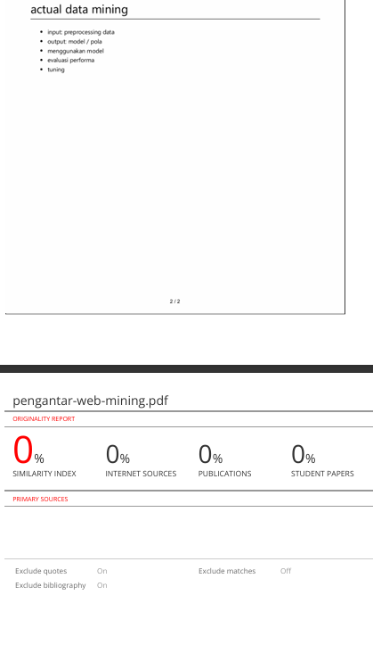
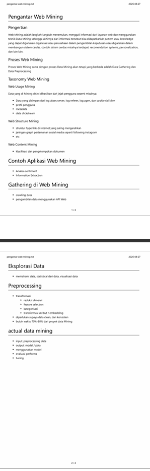

Pengantar Web Mining
Pengertian
Web Mining adalah langkah-langkah menemukan, menggali informasi dari layanan web dan menggunakan teknik Data Mining sehingga akhirnya dari informasi tersebut bisa didapatkanlah pattern atau knowledge yang dapat digunakan organisasi atau perusahaan dalam pengambilan keputusan atau digunakan dalam membangun sistem cerdas. contoh sistem cerdas misalnya terdapat: recomendation systems, personalization, dan lain lain.
Proses Web Mining
Proses Web Mining sama dengan proses Data Mining akan tetapi yang berbeda adalah Data Gathering dan Data Preprocessing
Taxonomy Web Mining
Web Usage Mining
Data yang di Mining disini dihasilkan dari jejak pengguna seperti misalnya: - Data yang disimpan dari log akses server, log referer, log agen, dan cookie sisi klien - profil pengguna - metadata - data clickstream
Web Structure Mining
- struktur hyperlink di internet yang saling mengarahkan
- jaringan graph pertemanan sosial media seperti following instagram
- etc
Web Content Mining
- klasifikasi dan pengelompokan dokumen
Contoh Aplikasi Web Mining
- Analisa sentiment
- Information Extraction
Gathering di Web Mining
- crawling data
- pengambilan data menggunakan API Web
Eksplorasi Data
- memahami data, statistical dari data, visualisasi data
Preprocessing
- transformasi
- reduksi dimensi
- feature selection
- kategorisasi
- transformasi atribut / embedding
- diperlukan supaya data clean, dan konsisten
- butuh waktu 70%-80% dari proyek data Mining
actual data mining
- input: preprocessing data
- output: model / pola
- menggunakan model
- evaluasi performa
- tuning
cek turnitin
 